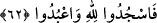
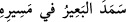
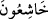
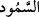
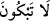

“Ve siz gaflet içinde oyalanmaktasınız!” Yâni eğleniyor veya kibir gösterisinde
bulunuyorsunuz. Âyetteki fiil: “Deve yolda giderken inadından dolayı başını kaldırdı: ()” ifâdesindeki anlamla aynıdır.
Râgıb “sâmid” kelimesinin; “Çalıp eğlenen, kafa tutan ve tegannî eden” anlamında
olduğunu söyler. Râğıb bu mânâyı Himyer lugatından almıştır. Nitekim müşrikler Kur’an
tilaveti duyduklarında bazı lakırdılar yaparak ona karşı çıkarlardı. Veya ()
anlamına gelir ve korkudan dolayı donup kalmayı ifâde eder. Yâni () korkudan
dolayı sersem sersem durup dona kalmaktır. Bu cümle () fiilinin fâilinden hâldir;
ancak muhtevâsı son vecih üzere nefiy ve inkâr için takyîd edilmişti. Hem ağlama ve
hem de başkaldırı birlikte vârid olmuştur. Nefiy ve inkâra bağlanmış olan ilk vecihler,
ağlamanın nefyine ve başkaldırının mevcûdiyyetine müteveccihtir. Burada nefiy makama
daha uygundur. Sen bunu iyi düşün! İrşad’da böyle geçer.
62. Haydi Allah’a secde edip O’na kulluk edin!
Âyet-i kerîmedeki () harfi; ya emrin tertibi için ya da inkâr ve istihza suretiyle
Kur’ân’a mukabelede bulunmanın bâtıl oluşunu te’kid için veyahut da kemal-i itâat ve
kemal-i huşû’ ile îmanı telakkî etmenin gerekliliğini beyân için getirilmiştir. Mânâ
şöyledir: “Hal böyle olunca hemen Kur’ân-ı indiren Allah’a secde edip kullukta
bulunun! Putlar ve yıldızlar gibi faydası ve zararı olmayan câmid/cansız şeylere
taptığınız gibi bir de kalkıp herhangi bir melike ve insana da kullukta bulunmayın!
Aynü’l-Meânî’de der ki: Bu âyetteki “secde edin” ifâdesi “namazda iken secde edin”
mânâsına gelebileceği gibi, daha doğru bir görüşe göre de münferid, yâni tilavet secdesi
anlamına gelmektedir. Ebû Hanife, Şafii ve İmam Ahmed’e göre bu secde, tilavet
secdesi mânâsındadır. Bu imamların dayanağı da Ömer b. Hattab (r.a.)’ın kavlidir. Zira
bu kavle göre Rasûlullah (s.a.) Necm sûresini okuyup (bitirdiği zaman) hemen secde
etmiştir. Yâni o, bu sureyi Kureyş’e okuyup tamamladığında secde etmiş ve onunla
birlikte oradaki tüm mümin, müşrik, ins ve cin de secdeye kapanmıştır. Bu olay daha
önce de geçmişti.
İmam Mâlik ise bu görüşte değildir. O, Zeyd b. Sabit (r.a.)’e isnad ettiği bir nakilde
Zeyd’in, Hz. Peygamber (s.a.)’e Necm sûresini tilavet ettiğini ve Peygamber (s.a.)’in
surenin sonunda secde etmediğini haber verdiğini söyler.
Kâşifî şöyle der: Bu secde Kur’an secdelerinin on ikincisidir. Fütûhât’ta buna
“ibâdet secdesi” denmiştir ki zillet ve meskenetle secde etmek ilâhî emre uygundur. Bu
sözün sırrına, ibâdet ve kulluğun son sınırına tarîkat sâliklerinden başka kimse
ulaşamamıştır.
Te’vilâtü’l-Baklî’de der ki: “Visal günleri yaklaştığı zaman şevkleniniz ve varlığınızı